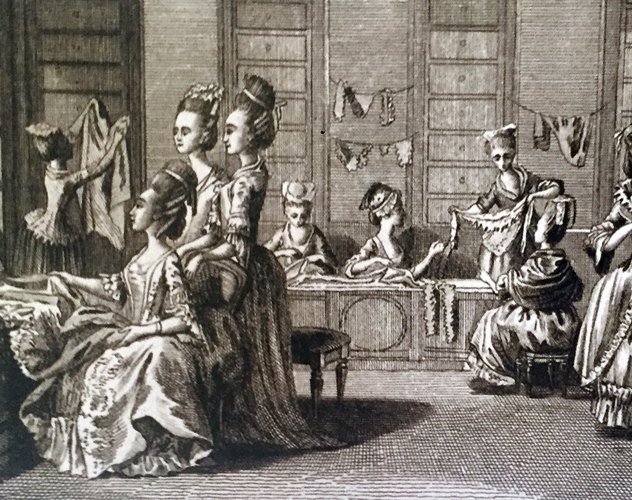
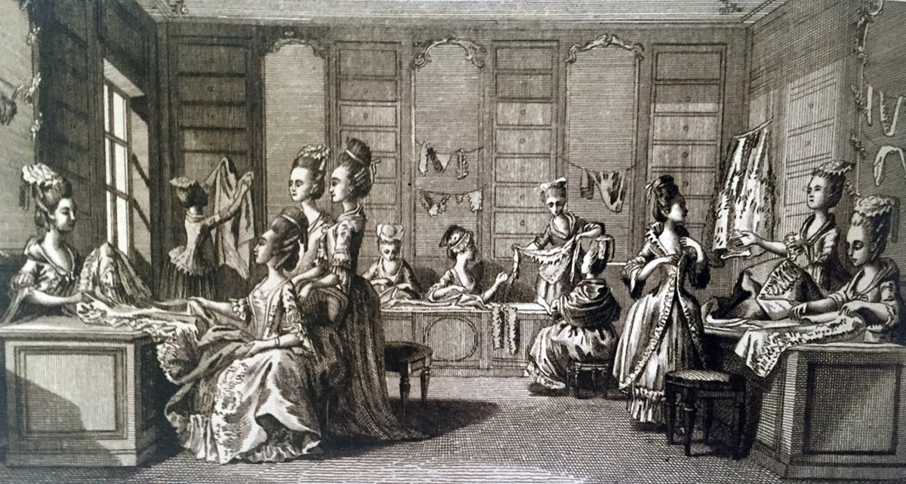

Subtracting from Meters
Today: subtract centimeters, or meters and centimeters, from whole meters by breaking one meter into 100 centimeters, and check by adding back. Dimensions Math 3B, Chapter 11, Lesson 2 · Subtracting from Meters

Paris, France · about 230 years ago

How do you take centimeters away from whole meters?
Break one meter into 100 centimeters. Take the centimeters from that meter, and keep the other meters whole.
You will…
- Break one meter into 100 centimeters when you need to take centimeters away.
- Subtract centimeters, or meters and centimeters, from whole meters.
- Check your answer by adding back.
Why the ribbon shop?
On the left is a real engraving from a big French book about trades, printed in Paris in 1769. It shows a shop that sold ribbon, lace and trim. On the right is a close-up: a worker holds up a long strip of trim, and more strips hang over the counter.

Shops like this sold ribbon and lace by length. A customer asked for a piece, and the shop cut it off a long roll. When France changed to the new meter, shops measured those pieces in meters and centimeters.
Today's math: a roll is measured in whole meters, but a customer may want only some centimeters. Break one meter into 100 centimeters, cut the piece, and keep the other meters whole.
One meter is 100 centimeters, so today you'll make 100 a lot. Type each answer, then check. You can fix any answer and check again.
Meters into centimeters
Think: The First Order
🔨 Do · ✏️ WriteThe ribbon shop opens. The purple ribbon roll has 9 m of ribbon. The first customer wants 47 cm. How much ribbon is left on the roll?
The roll is drawn as 9 whole meters in a row. When you break a meter, it opens up below as one big ruler, 100 centimeters long, with scissors to cut it.
Break a meter
Press ✂ Break a meter, or tap one whole meter.
Cut 47 cm
Drag the scissors to 47 on the open meter.
What is left of the open meter?
What is left on the roll?
Tell how
8 m 53 cm are left. One meter broke into 100 cm. 47 cm were cut off, 53 cm stayed, and 8 whole meters were never touched.
Break one meter, keep the rest
- Break one meter. You can't take centimeters from a whole meter. Break one meter into 100 cm. 9 m is the same as 8 m 100 cm.
- Take the centimeters from the 100. Count up: 28 + 2 = 30, and 30 + 70 = 100. So 100 − 28 = 72.
- Keep the other meters. 9 m − 28 cm = 8 m 72 cm.
- Another way. Take away 1 whole meter, then give back the 72 cm you didn't need.
- All in centimeters. 9 m is 900 cm. 900 cm − 28 cm = 872 cm = 8 m 72 cm.
- Check by adding back. 8 m 72 cm + 28 cm = 8 m 100 cm = 9 m.
A length that uses two units together, like 8 m 72 cm, is written in compound units.
Four ways to subtract from meters
Your Turn: 8 m − 1 m 26 cm
🔨 DoA roll has 8 m of ribbon. Cut off 1 m 26 cm. How much is left?
A roll of 8 whole meters. Hand over whole meters by tapping them. A broken meter opens below as a 100 cm ruler.
Take away the meters
Tap 1 whole meter to hand it over.
Break a meter
Press ✂ Break a meter.
Cut 26 cm
Drag the scissors to 26 on the open meter.
What is left?
Check by adding back
Juno Keeps Every Meter
🔨 Do · ✏️ WriteA roll has 9 m of ribbon. Cut off 32 cm. Juno says, "9 m 68 cm are left." Then she changes her mind: "No, just 68 cm."
A roll of 9 whole meters. A broken meter opens below as a 100 cm ruler.
Break a meter
Press ✂ Break a meter, or tap one whole meter.
Cut 32 cm
Drag the scissors to 32 on the open meter.
Look at Juno's first answer
Count what is left
Help Juno
Leo Mixes Up the Units
🔨 Do · ✏️ WriteA roll has 8 m of ribbon. Cut off 16 cm. Leo says, "16 − 8 = 8, so 8 cm are left."
A roll of 8 whole meters. A broken meter opens below as a 100 cm ruler.
Break a meter
Press ✂ Break a meter, or tap one whole meter.
Cut 16 cm
Drag the scissors to 16 on the open meter.
Same unit first
Back to meters
Help Leo
Kai's Hundred Is Off
🔨 Do · ✏️ WriteA ribbon is 1 m long. Cut off 44 cm. Kai counts up to 100 and says, "66 cm are left."
One whole meter of ribbon. When you break it, it opens below as a 100 cm ruler. Under it is a number line for counting up.
Break the meter
Press ✂ Break a meter, or tap the whole meter.
Cut 44 cm
Drag the scissors to 44 on the open meter.
Count up to 100
Check Kai by adding back
Help Kai
On Your Own: 9 m − 1 m 63 cm
🔨 Do · ✏️ WriteA roll has 9 m of ribbon. Cut off 1 m 63 cm. How much is left?
A roll of 9 whole meters. Hand over whole meters by tapping them. A broken meter opens below as a 100 cm ruler.
Take away the meters
Tap 1 whole meter to hand it over.
Break a meter
Press ✂ Break a meter.
Cut 63 cm
Drag the scissors to 63 on the open meter.
What is left?
Check by adding back
Tell how you know
Cut the Orders
🔨 DoA roll has 8 m of ribbon. Two orders come in. Order 1 is 1 m 12 cm. Order 2 is 27 cm. Cut them one at a time.
A roll of 8 whole meters. Tap a whole meter to hand it over. A broken meter opens below as a 100 cm ruler, and each order you cut stays shaded on it.
Problem 1 · Order 1: take away the meters
Tap 1 whole meter to hand it over.
Problem 1 · Order 1: break a meter
Press ✂ Break a meter.
Problem 1 · Order 1: cut 12 cm
Drag the scissors to 12 on the open meter.
Problem 1 · What is left after order 1?
Problem 2 · Order 2: cut 27 cm
The open meter still has ribbon on it. Drag the scissors to cut 27 cm more.
Problem 2 · What is left after order 2?
Prove It
✏️ WriteProblem 3 · Prove It
Almost 8 Meters
A roll has 9 m of ribbon. Cut off 7 m 96 cm. How much is left? (7 m 96 cm is just 4 cm less than 8 m.)
Turn in your work
- Check the list below. Jobs 1 to 8 are required. The Bonus is optional.
- Press 📋 Gather my answers, then 📋 Copy. Or press 🖨️ Print or save as PDF.
- Open this lesson's assignment in Canvas.
- Paste your answers (or upload your PDF and journal photo), then press Submit.
All my answers
Your answers and your work on this page save on this device as you go.
Before you turn in
- I finished Jobs 1 to 8.
- I broke one meter into 100 cm and kept the other meters whole.
- I checked an answer by adding back.
- I tried the Bonus. (optional)
Lesson 3.11.03 · Kilometers
Next time, you'll meet a much longer unit for measuring long distances: the kilometer.
The "Surprise" Symphony
The slow part of a symphony by Joseph Haydn, first played in London in 1792. The tune starts soft and quiet. Listen for the one big, loud chord!
Symphony No. 94 in G major, "Surprise," Hob. I:94, second part (Andante), Joseph Haydn (1791). Played by the Boston Symphony Orchestra, conducted by Serge Koussevitzky (1929). Public domain, via Wikimedia Commons.